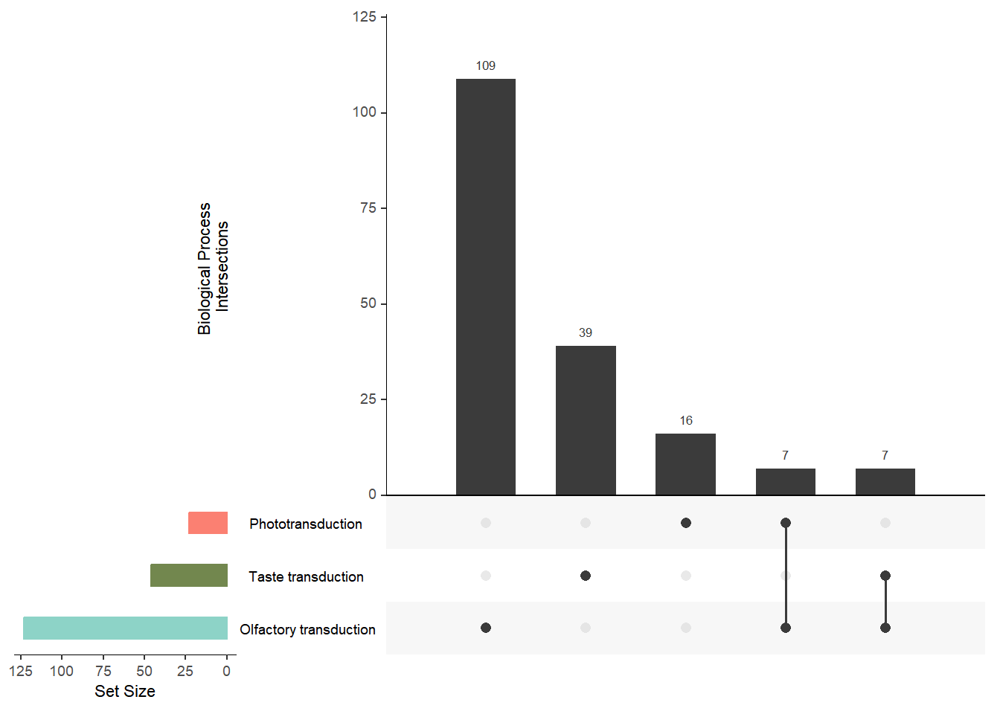
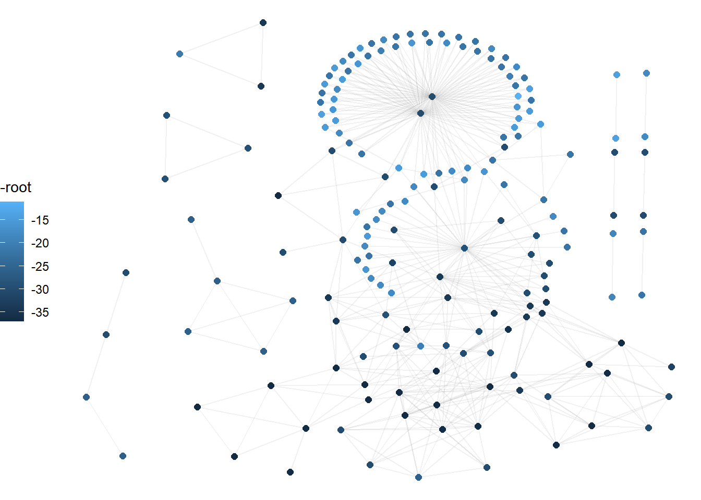
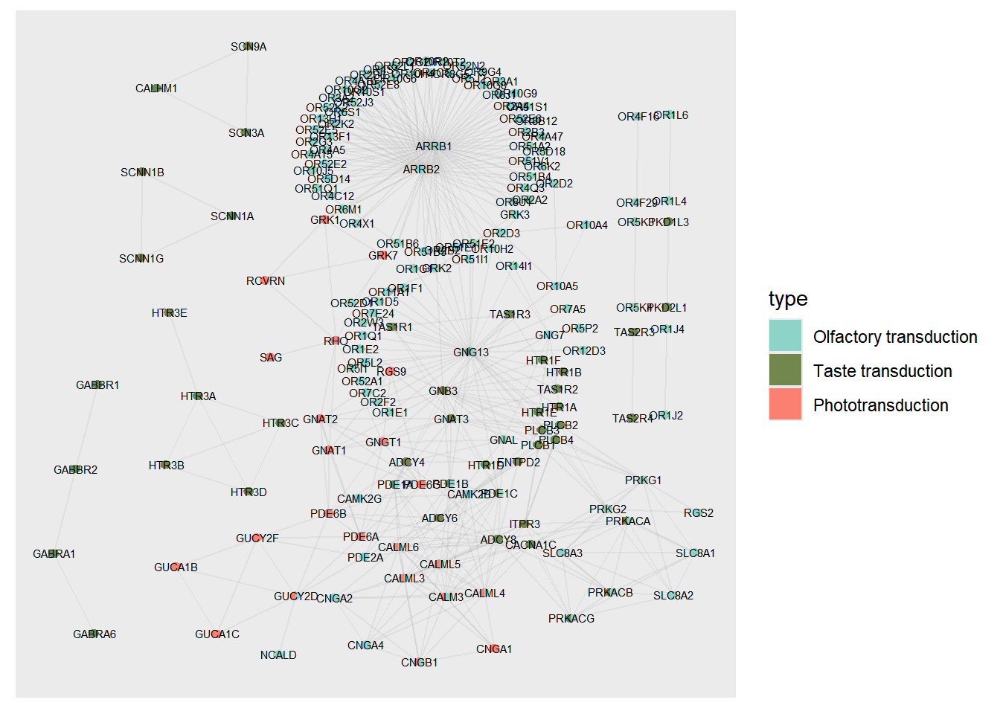
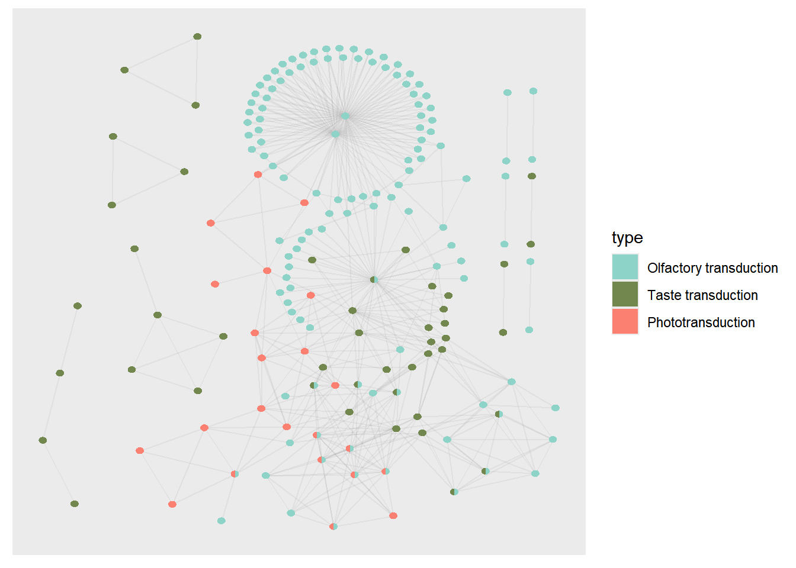
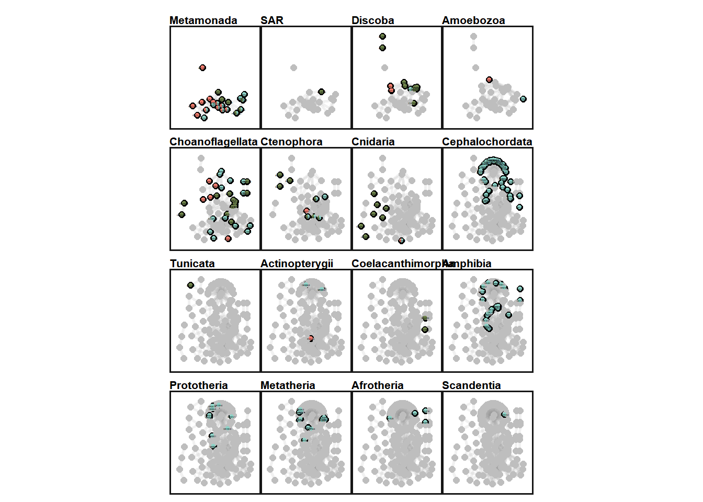
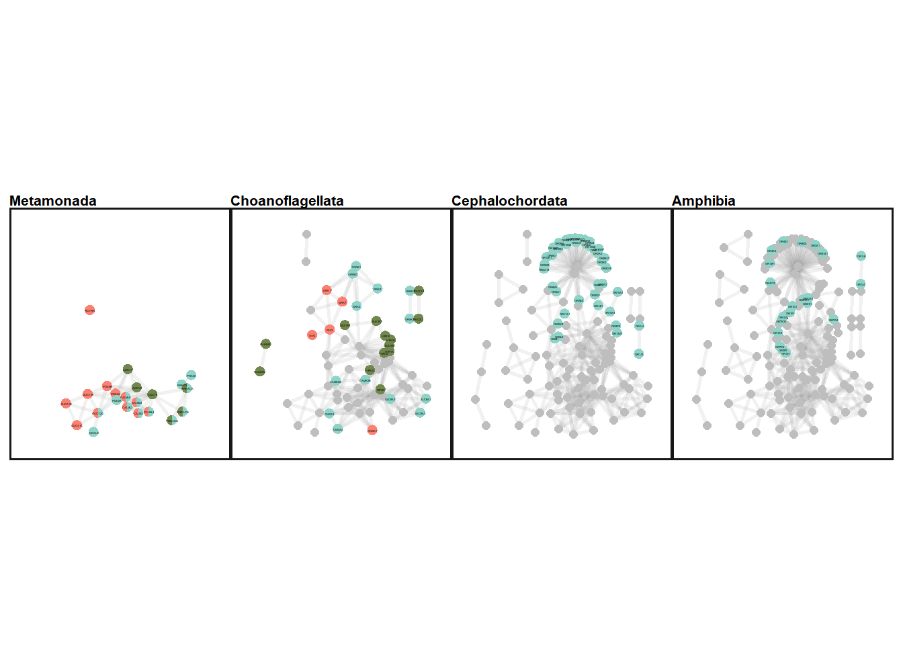

library(ggplot2)
library(ggraph)
library(dplyr)
library(tidyr)
library(igraph)
library(purrr)
library(vroom)
library(paletteer)
library(easylayout)
library(UpSetR)
library(tinter)
library(here)
library(dplyr)Plotting Roots
1 Importing libraries
2 Defining functions
# Set colors
color_mappings <- c(
"Olfactory transduction" = "#8dd3c7"
,"Taste transduction" = "#72874EFF"
,"Phototransduction" = "#fb8072"
)
subset_graph_by_root <-
function(geneplast_result, root_number, graph) {
filtered <- geneplast_result %>%
filter(root >= root_number) %>%
pull(node)
induced_subgraph(graph, which(V(graph)$name %in% filtered))
}
adjust_color_by_root <- function(geneplast_result, root_number, graph) {
filtered <- geneplast_result %>%
filter(root == root_number) %>%
pull(node)
V(graph)$color <- ifelse(V(graph)$name %in% filtered, "black", "gray")
return(graph)
}
# Configure graph collors by genes incrementation
subset_and_adjust_color_by_root <- function(geneplast_result, root_number, graph) {
subgraph <- subset_graph_by_root(geneplast_result, root_number, graph)
adjusted_graph <- adjust_color_by_root(geneplast_result, root_number, subgraph)
return(adjusted_graph)
}
plot_network <- function(graph, title, nodelist, xlims, ylims, legend = "none") {
# Generate color map
source_statements <-
colnames(nodelist)[10:length(nodelist)]
color_mappings <- c(
"Olfactory transduction" = "#8dd3c7"
,"Taste transduction" = "#72874EFF"
,"Phototransduction" = "#fb8072"
)
vertices <- igraph::as_data_frame(graph, "vertices")
ggraph:: ggraph(graph,
"manual",
x = V(graph)$x,
y = V(graph)$y) +
ggraph::geom_edge_link0(edge_width = 1, color = "#90909020") +
ggraph::geom_node_point(ggplot2::aes(color = I(V(graph)$color)), size = 2) +
scatterpie::geom_scatterpie(
aes(x=x, y=y, r=18),
cols = source_statements,
data = vertices[rownames(vertices) %in% V(graph)$name[V(graph)$color == "black"],],
colour = NA,
pie_scale = 1
) +
geom_node_text(aes(label = ifelse(V(graph)$color == "black", V(graph)$queryItem, NA)),
nudge_x = 1, nudge_y = 1, size = 0.5, colour = "black") +
ggplot2::scale_fill_manual(values = color_mappings, drop = FALSE) +
ggplot2::coord_fixed() +
ggplot2::scale_x_continuous(limits = xlims) +
ggplot2::scale_y_continuous(limits = ylims) +
ggplot2::theme_void() +
ggplot2::theme(
legend.position = legend,
legend.key.size = ggplot2::unit(0.5, 'cm'),
legend.key.height = ggplot2::unit(0.5, 'cm'),
legend.key.width = ggplot2::unit(0.5, 'cm'),
legend.title = ggplot2::element_text(size=6),
legend.text = ggplot2::element_text(size=6),
panel.border = ggplot2::element_rect(
colour = "#161616",
fill = NA,
linewidth = 1
),
plot.title = ggplot2::element_text(size = 8, face = "bold")
) +
ggplot2::guides(
color = "none",
fill = "none"
) +
ggplot2::labs(fill = "Source:", title = title)
}3 Loading required data
#Load data (need to save tables from first qmd)
nodelist <- vroom::vroom(file = here("data/nodelist.csv"), delim = ",")
string_edgelist <- vroom::vroom(file = here("data/string_edgelist.csv"), delim = ",")
merged_paths <- vroom::vroom(file = here("data/merged_paths.csv"), delim = ",")4 Visualization with UpSet Plot
The UpSet Plot is a useful tool for visualizing the distribution and intersection of genes among different metabolic pathways. It allows for the identification of how genes are shared or are exclusive among the analyzed categories.
upset(dplyr::select(as.data.frame(nodelist),
"Olfactory transduction",
"Taste transduction",
"Phototransduction"),
nsets = 50, nintersects = NA,
sets.bar.color = c("#8dd3c7", "#72874EFF", "#fb8072"),
mainbar.y.label = "Biological Process \nIntersections",
sets.x.label = "Set Size")
5 Protein-Protein Interaction Network Visualization
Interaction network visualization is essential for understanding the functional connections between proteins. Here, we use the easylayout package, developed by Danilo Imparato, to generate an efficient layout. This package organizes the network nodes into x and y coordinates, allowing for a structured and clear visualization. Subsequently, the graph will be plotted using ggraph.
## Graph Build
#graph <-
# graph_from_data_frame(string_edgelist, directed = FALSE, vertices = nodelist)
#layout <- easylayout::easylayout(graph)
#V(graph)$x <- layout[, 1]
#V(graph)$y <- layout[, 2]
#save(graph, file = "../data/graph_layout")5.1 Visualization of Each Node’s Ancestry
Analyzing the ancestry of each node in the network provides an evolutionary perspective on the analyzed proteins. Here, we use ggraph to plot the graph with the positions previously saved by easylayout.
The nodes are colored according to the distance from the Last Common Ancestor (LCA) of the analyzed clades and humans (Human-LCA). The darker shade indicates older clades relative to humans, while light shades of blue represent newer clades that are closer to the Human-LCA.
load("../data/graph_layout")
ggraph(graph, "manual", x = V(graph)$x, y = V(graph)$y) +
geom_edge_link0(color = "#90909020") +
geom_node_point(aes(color = -root), size = 2) +
theme_void() +
theme(legend.position = "left")
5.2 Visualization of the Protein-Protein Interaction Network in Humans
To better understand the relationship between human proteins, we plot the interaction network where the nodes represent human genes associated with their biological processes.
5.2.1 Description of the graph elements:
- Nodes (Circles): The colors of the nodes are divided according to the biological processes assigned to each gene. The use of pie charts allows for the visualization of genes that participate in multiple processes.
- Edges (Lines): These represent the protein interactions based on data from STRINGdb.
- Gene Labels: Each node is annotated with its corresponding gene symbol, strategically positioned for easy reading.
## Plotting Human PPI Network
#ppi_labaled <-
ggraph::ggraph(graph,
"manual",
x = V(graph)$x,
y = V(graph)$y) +
ggraph:: geom_edge_link0(edge_width = 0.5, color = "#90909020") +
scatterpie::geom_scatterpie(
cols = colnames(nodelist[10:12]),
data = igraph::as_data_frame(graph, "vertices"),
colour = NA,
pie_scale = 0.40
) +
geom_node_text(aes(label = nodelist$queryItem), colour = "black", nudge_x = 0.8, nudge_y = 0.8, size = 2) +
ggplot2::scale_fill_manual(values = color_mappings, drop = FALSE)
#ppi <-
ggraph::ggraph(graph,
"manual",
x = V(graph)$x,
y = V(graph)$y) +
ggraph:: geom_edge_link0(edge_width = 0.5, color = "#90909020") +
scatterpie::geom_scatterpie(
cols = colnames(nodelist[10:12]),
data = igraph::as_data_frame(graph, "vertices"),
colour = NA,
pie_scale = 0.40
) +
ggplot2::scale_fill_manual(values = color_mappings, drop = FALSE)
5.3 2.3. Visualization of the Protein-Protein Interaction Network in Each Clade
In this section, we visualize the genes that are statistically rooted in each clade. The arrangement of the genes allows us to observe the increase in orthologous genes as a function of the biological system’s complexity and age.
5.3.1 Visualization Features:
- Graph Evolution: The graphs are organized from left to right and top to bottom, allowing for the analysis of evolutionary progression.
- Node Coloring: The color of the nodes indicates the level of ancestry, as previously highlighted, where darker shades represent older clades and lighter shades indicate evolutionary proximity to humans.
- Organisms of Interest: In addition to visualizing all clades, it is possible to generate graphs focused only on specific groups, such as Metamonada, Choanoflagellata, Cephalochordata, and Amphibia.
With these visualizations, it is possible to identify patterns of gene evolution across different clades and perform detailed comparisons with specific organisms of interest.
geneplast_roots <- merged_paths[order(merged_paths$root), ]
buffer <- c(-50, 50)
xlims <- ceiling(range(V(graph)$x)) + buffer
ylims <- ceiling(range(V(graph)$y)) + buffer
roots <- unique(geneplast_roots$root) %>%
set_names(unique(geneplast_roots$clade_name))
# Subset graphs by LCAs
subsets <-
map(roots, ~ subset_and_adjust_color_by_root(geneplast_roots, .x, graph))
# Plot titles
titles <- names(roots)
plots <-
map2(
subsets,
titles,
plot_network,
nodelist = nodelist,
xlims = xlims,
ylims = ylims,
legend = "right"
) %>%
discard(is.null)
#net_all_roots <-
patchwork::wrap_plots(
rev(plots),
nrow = 4,
ncol = 4
)
#ggsave(file = "../data/network_rooting.svg", plot=net_all_roots, width=10, height=8)patchwork::wrap_plots(
plots$Metamonada, plots$Choanoflagellata, plots$Cephalochordata, plots$Amphibia,
ncol = 4
)